Префектура Нара · Касихара, Сакураи, Асука, Тэнри, Уда · история
Нара, где всё началось: шесть мест древней истории Японии
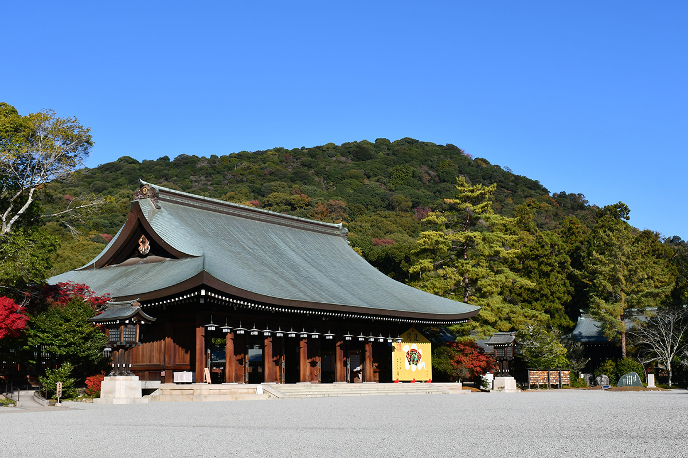
По преданию, именно в Наре взошёл на престол первый император, здесь стояли три первые столицы страны и впервые прозвучало слово «Япония». Шесть мест, где эта древность не стала музеем и по-прежнему живёт рядом с людьми.
Начало
Почему Нару называют землёй начал
Если спросить, где в Японии всё начиналось, многие японцы ответят: в Наре. Согласно летописи «Нихон сёки», больше 2680 лет назад император Дзимму, первый правитель страны, построил дворец Касихара-но мия у подножия горы Унэби и взошёл здесь на престол. Святилище Касихара-дзингу, которое стоит на месте этого дворца, до сих пор называют «местом основания Японии».
С конца VI до конца VIII века в Наре одна за другой стояли три столицы: Асука-кё, Фудзивара-кё и Хэйдзё-кё. Во времена Фудзивара-кё появился свод законов «Тайхо рицурё», первый систематический кодекс страны, и тогда же впервые стали использовать название «Япония».
По Шёлковому пути сюда приходили вещи и идеи из Азии и даже Европы, и Нара была самым передовым местом страны. Поэтому многое в Японии здесь и началось. Важно и другое: многие из этих начал до сих пор живут в здешних обычаях. История в Наре воспринимается не как оборванное прошлое, а как старина, которая продолжается сегодня.
Святилище
Касихара-дзингу: где правил первый император
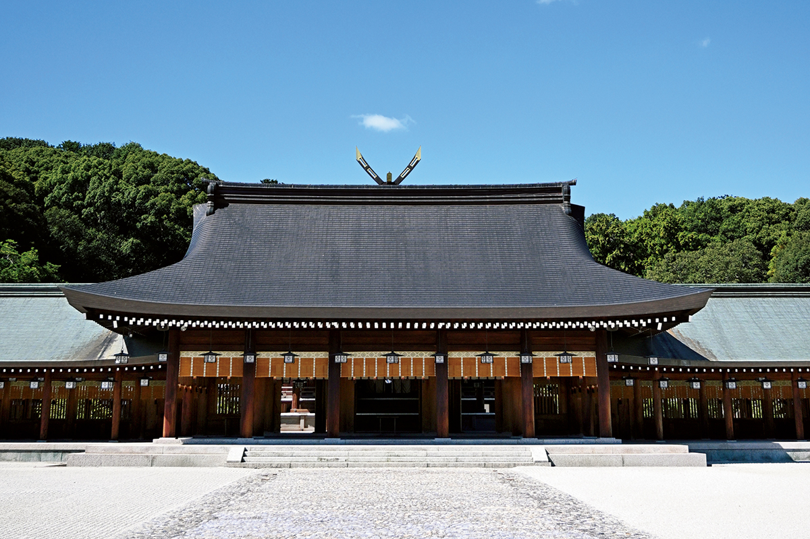
Святилище стоит у юго-восточного подножия горы Унэби, которую воспевали ещё в древней поэтической антологии «Манъёсю». Здесь почитают императора Дзимму и его супругу, императрицу Химэтатараисудзу-химэ. Святилище основали в 1890 году, после того как простые жители подали прошение построить его на месте древнего дворца.
В сокровищнице выставлены ценные вещи, среди них меч императора Мэйдзи (1852–1912), при котором Япония стала современным государством. К северо-востоку от горы Унэби находится курган, где, по преданию, покоится сам Дзимму.
Святилище Касихара-дзингу
- Адрес
- префектура Нара, Касихара, Кумэ-тё, 934
- Телефон
- +81 744-22-3271
- Часы работы
- октябрь, ноябрь, февраль, март 6:30–17:30; декабрь, январь 6:30–17:00; апрель, май, август, сентябрь 6:00–18:00; июнь, июль 5:30–18:00; в дни праздников время может меняться
Святилище
Омива: молятся самой горе
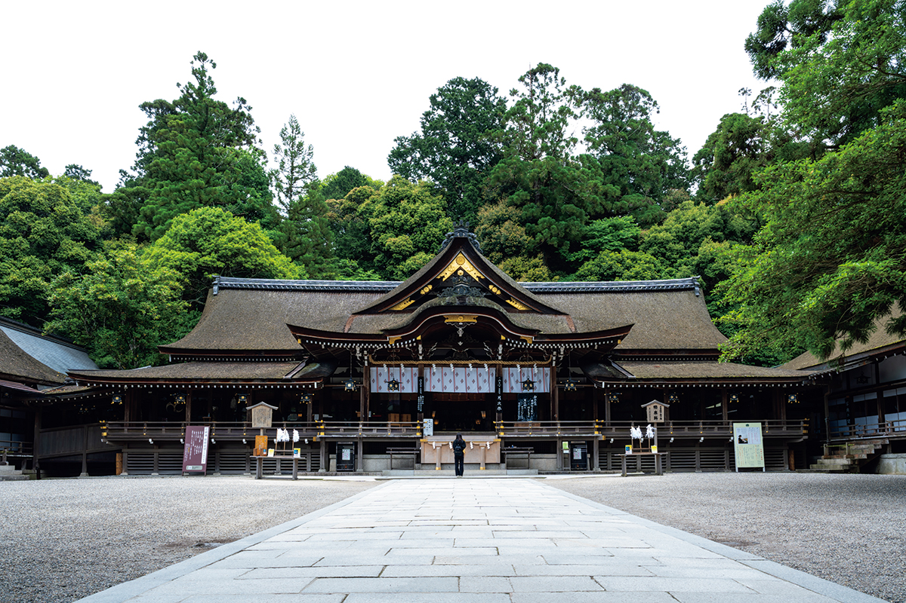
Святилище Омива в городе Сакураи считают одним из древнейших в Японии. Божество Омононуси-но Оками почитают как создателя страны и хранителя людской жизни, и пребывает оно в самой горе Мива. Поэтому главного зала здесь нет: из молельного зала молятся горе через тройные ворота торий, которые стоят за ним. Так почитали богов в самые древние времена. На саму гору тоже можно подняться ради молитвы, но только в установленные часы и после записи.
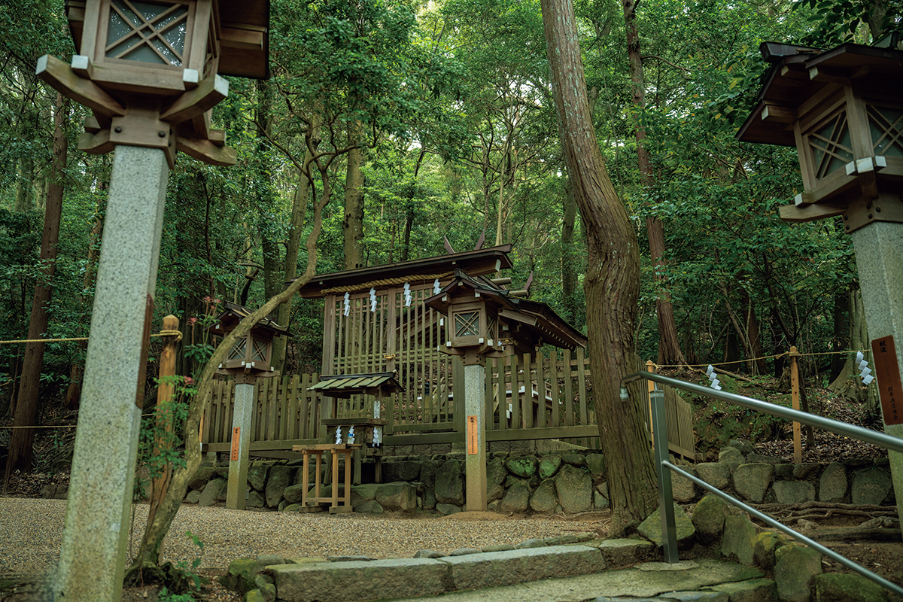
Святилище Омива
- Адрес
- префектура Нара, Сакураи, Мива, 1422
- Телефон
- +81 744-42-6633
- Часы работы
- территория открыта всегда, окошко амулетов 9:00–17:00 (зависит от сезона)
- Сайт
- oomiwa.or.jp
Храм
Асука-дэра: 1400 лет на одном месте
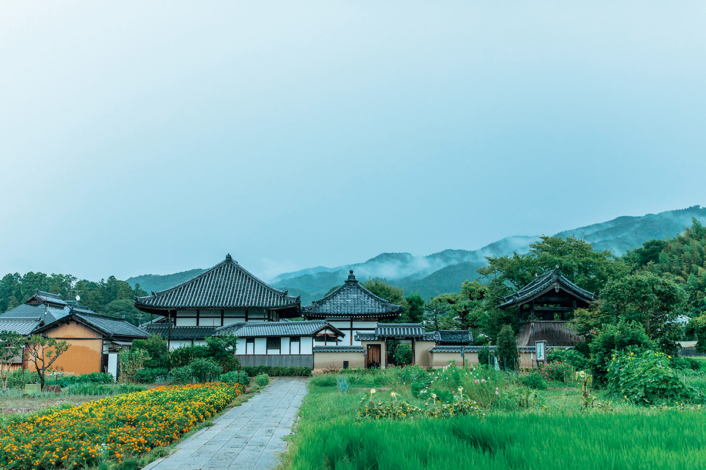
Храм Асука-дэра основал в 596 году Сога-но Умако (?–626), глава могущественного рода, покровитель буддизма и двоюродный дед принца Сётоку. Это первый в Японии храм с полным набором построек. Тогда он был примерно в 20 раз больше нынешнего: в центре стояла пагода, вокруг три золотых зала, а снаружи всё окружала крытая галерея. Вокруг храма и расцвела культура периода Асука. Ярко раскрашенные постройки погибли в пожаре, и главный зал заново построили в период Эдо.
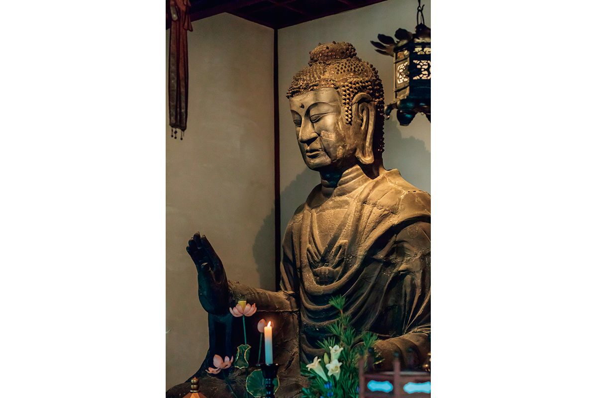
Храм Асука-дэра
- Адрес
- префектура Нара, уезд Такэти, деревня Асука, Асука, 682
- Телефон
- +81 744-54-2126
- Часы работы
- 9:00–17:30, с октября по март до 17:00
- Сайт
- asukamura.com
Деревня
Асука: где закладывали основы государства
В деревне Асука один за другим стояли дворцы японских правителей, например дворец Асука Итабуки-но мия, и именно здесь строилось раннее японское государство. Здесь же храм Татибана-дэра, где, по преданию, родился принц Сётоку. Сога-но Умако, хозяин этих мест, приходился принцу двоюродным дедом.
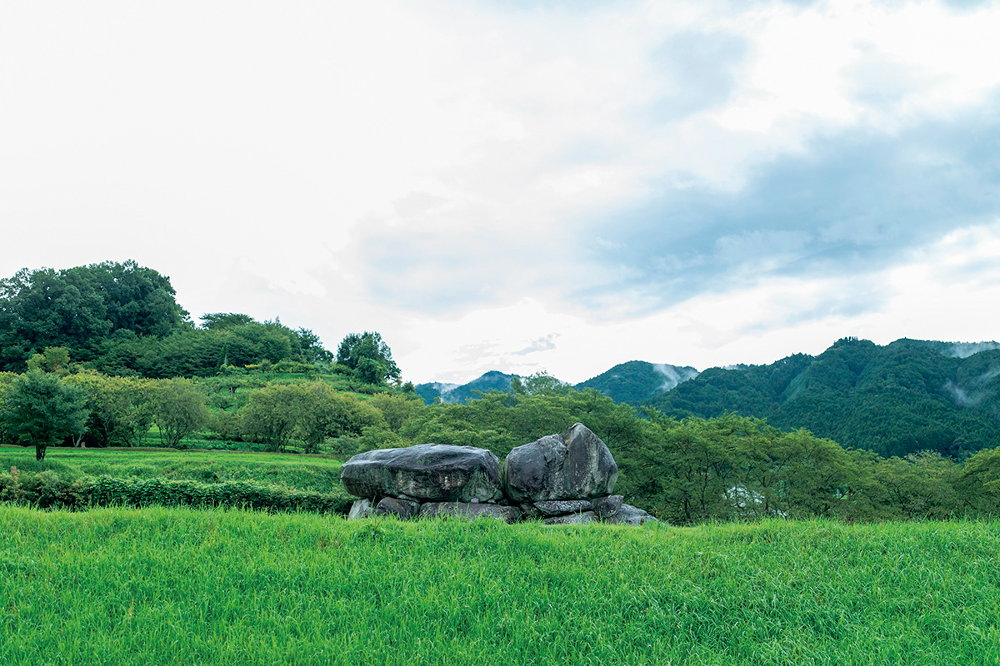
Кроме храмов по деревне можно обойти курганы Такамацудзука, Китора, Кэнгосидзука и соседний Косицука-гомон, а также загадочные каменные фигуры Камэиси и Саруиси.
Курган Исибутай
- Адрес
- префектура Нара, уезд Такэти, деревня Асука, Симаносё
- Телефон
- +81 744-54-3240 (туристическая ассоциация Асуки)
- Часы работы
- 9:00–17:00, вход до 16:45
- Выходные
- без выходных
- Сайт
- asukamura.com
Святилище
Исоноками-дзингу: древнейшее «дзингу» из «Кодзики»
Исоноками-дзингу в городе Тэнри тоже называют одним из древнейших святилищ страны, а его имя упоминается уже в «Кодзики», самой ранней японской летописи. Здешние божества, которых вместе называют Исоноками-но Оками, начали почитать при императоре Судзине на священном возвышении Фуру-но таканива.
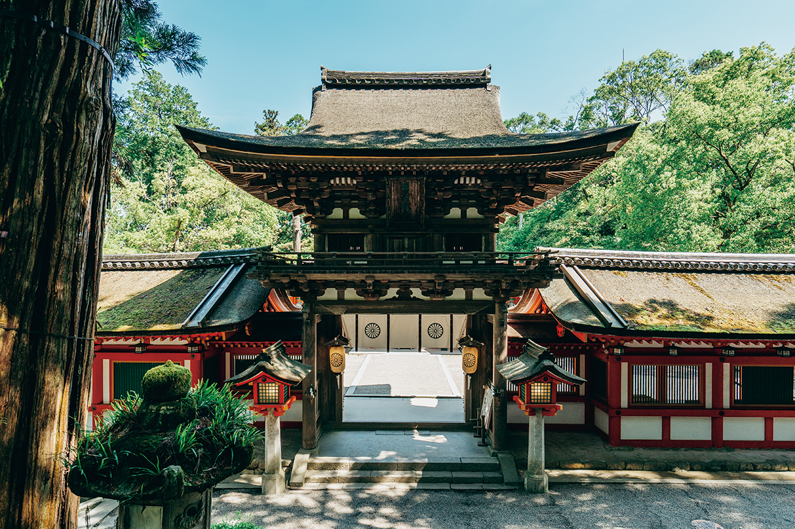
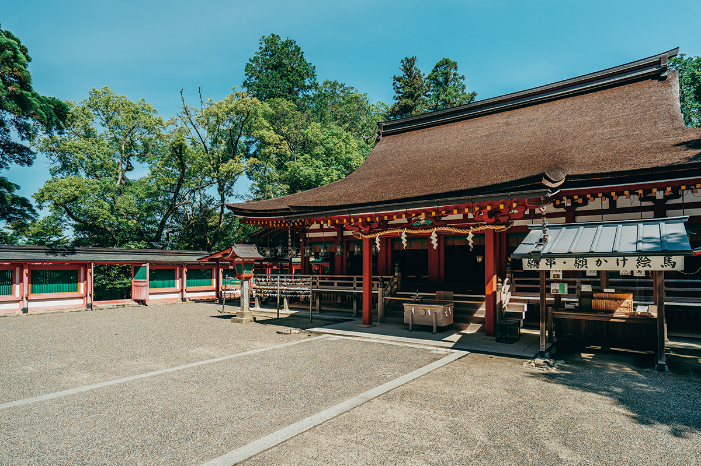
Святилище Исоноками-дзингу
- Адрес
- префектура Нара, Тэнри, Фуру-тё, 384
- Телефон
- +81 743-62-0900
- Часы работы
- 8:30–17:00 (часы приёма молитв и печатей госюин зависят от сезона)
- Сайт
- isonokami.jp
Сад
«Морино кю-якуэн»: старейший частный сад лекарственных трав
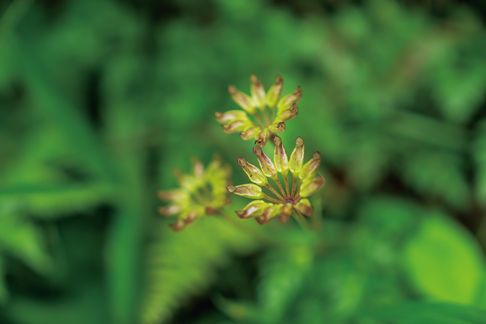
Сад в городке Оуда на востоке префектуры заложил в середине периода Эдо Тосукэ Морино, первый в роду владельцев, большой любитель лекарственных растений. Он собирал травы в горах по всему региону Кинки, а также в землях Мино и Хокурику, и подносил их сёгунату. В награду сёгунат пожаловал ему редкие растения, привезённые из Китая. Он посадил их в саду при своём доме, и так появился сад «Морино кю-якуэн».
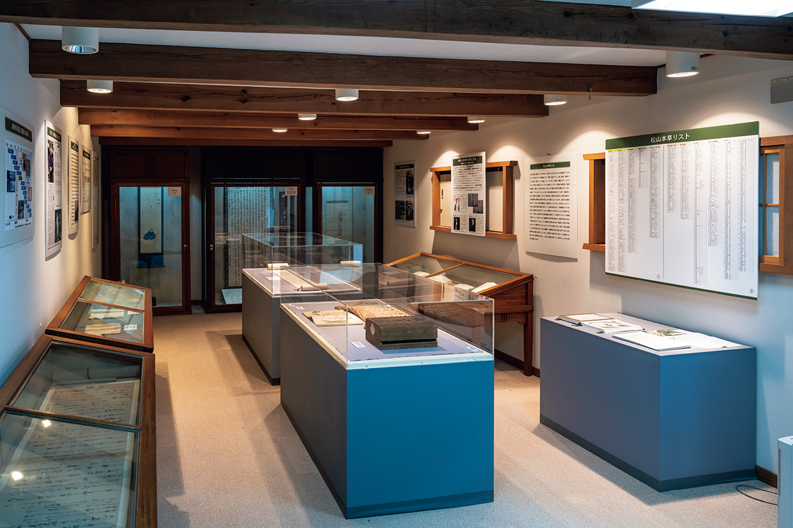
«Морино кю-якуэн»
- Адрес
- префектура Нара, Уда, Оуда, Камисин, 1880
- Телефон
- +81 745-83-0002
- Часы работы
- 9:00–16:30
- Выходные
- нерегулярные
Фото: Садахо Найто, Мицуюки Накадзима, Юта Того, святилище Касихара-дзингу.